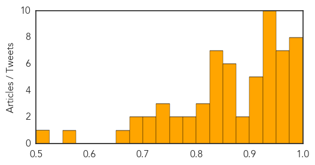

Influenza
30-Day Web Trend
1 alerts, 0 warnings

30-Day Twitter Trend
1 alerts, 0 warnings

Article Locations

Article Confidences
Top Articles:
- 0.998
- H7N7 virus: bird flu confirmed at poultry farm in Lancashire
- 0.997
- Bird flu outbreak: threat to humans virtually non-existent say experts
- 0.997
- European H5N8 bird flu outbreak highly contagious, but not necessarily for humans
- 0.995
- Bird Flu: The latest outbreak. Q & A
- 0.988
- Egyptian Woman Dies Of Bird Flu For A Total Of 6 Cases This Year
- 0.984
- Bird flu strain H5N1 kills teenager in Egypt
- 0.981
- 'Bird flu' test call as two more cases revealed
- 0.980
- Bird Flu discovered on Yorkshire farm – health risk low — RT UK
- 0.975
- Urgent measures to prevent spread of bird flu from Nafferton Farm
- 0.967
- 1918 flu outbreak wracked city, nation
- 0.963
- Michelle Driedger: Nasal-mist flu vaccine may be best option for many people
- 0.955
- UK and Netherlands in mass bird flu cull
- 0.954
- 'Bird flu fatigue' the big health challenge
- 0.953
- Strains, Spread and Christmas Risk as Virus Identified on Yorkshire Duck Farm
- 0.952
- H5N8 strikes birds in Netherlands, possibly England
- 0.950
- Bird flu outbreak: affected farm run by company with premises in China
- 0.946
- Bird Flu Confirmed At Yorkshire Duck Farm In First UK Case In 6 Years
- 0.946
- Bird flu case at Yorkshire duck farm
- 0.945
- Bird flu outbreak on Yorkshire duck breeding farm
- 0.945
- Norfolk farmers confident bird flu risk will be contained
- 0.944
- Are Flu Vaccines Risking Senior Citizens’ Lives? Some Say Yes
- 0.943
- Irish poultry farmers urged to be vigilant over bird flu
- 0.943
- Irish poultry farmers urged to be vigilant over bird flu
- 0.942
- Farmers warned to be on alert over Bird Flu scare
- 0.935
- German, Dutch, UK bird flu outbreaks could be linked: OIE chief
- 0.912
- Bird flu found in UK, Netherlands
- 0.911
- New European moves to clamp down on bird flu after latest outbreaks
- 0.908
- Wikipedia knows when disease outbreaks are coming
- 0.908
- Moves to clamp down on bird flu
- 0.908
- Moves to clamp down on bird flu
- 0.888
- Avian Influenza in The Netherlands and the UK: Commission backs emergency safeguard measures
- 0.879
- ‘Contagious’ bird flu outbreaks on Dutch
- 0.873
- First Bird flu case confirmed at UK farm in six years
- 0.864
- Highly Pathogenic Bird Flu Reported in Netherlands, UK
- 0.863
- Avian Influenza Cases Spread Through Europe
- 0.863
- Contagious bird flu outbreaks on Dutch, British farms
- 0.861
- Irish farmers worried that bird flu could hit Ireland before Christmas taking turkey off the menu
- 0.851
- 'Contagious' bird flu outbreaks on Dutch, British farms
- 0.843
- Bird flu found in UK, Netherlands but authorities say little risk to humans
- 0.840
- Bird flu: EU talks as Netherlands battles outbreak
- 0.834
- Dutch check farms after 'contagious' bird flu outbreak
- 0.833
- Russian Health Watchdog Warns of Flu Spike
- 0.833
- Bird flu found in UK, Netherlands but authorities say little risk to humans
- 0.832
- Bird flu found in UK, Netherlands but authorities say little risk to humans
- 0.826
- Bird flu found in UK, Netherlands but authorities say little risk to humans
- 0.817
- Bird flu found in UK, Netherlands but authorities say little risk to humans
- 0.817
- Bird flu found in UK, Netherlands but authorities say little risk to humans
- 0.804
- Dutch bird flu: other farms checked - International
- 0.777
- Dutch ban export of poultry after bird flu outbreak
- 0.776
- H5N8 bird flu confirmed in The Netherlands
Showing top 50 articles...
Top Tweets:
-
No tweets found for Nov 17, 2014
Mold/Fungal
30-Day Web Trend
4 alerts, 0 warnings

30-Day Twitter Trend
0 alerts, 0 warnings

Article Locations
Article Confidences

Top Articles:
Top Tweets:
-
No tweets found for Nov 17, 2014